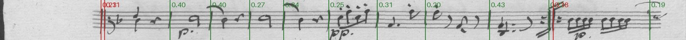
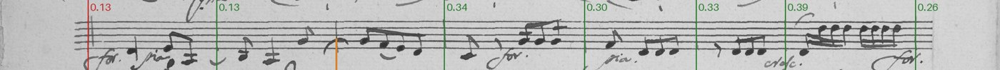
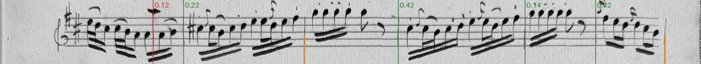
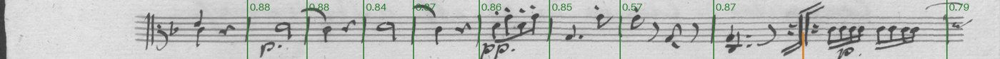
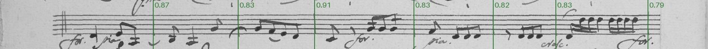
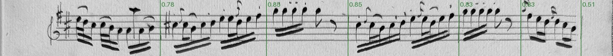
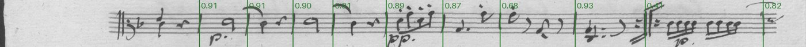
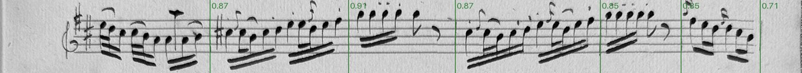

YOLO26n with staff endsin the labeler
YOLO26n trained on the reviewed lines (a tenth held back for testing), cut across the paper's width, to box bar lines and also where each staff starts (its clef, key and time) and ends. The labeler's cached detector for both.
Ultralytics YOLO26 docs · Ultralytics licensing · our training script · how the labeler uses it
Model card
- Architecture
- YOLO26 nano: single-stage detector, end to end (no NMS step)
- Parameters
- about 2.4 million (published)
- Starting weights
- yolo26n.pt, COCO-pretrained (Ultralytics)
- Licence
- AGPL-3.0 (Ultralytics); fine for the editor's own use, not bundled with the MIT labeler
- Input
- a 640 px tile of a staff straightened across the paper's whole width, 3 staff spaces above and below
- Output
- boxes of three classes: "barline" (its centre is the bar line), "start" (from the staff's left end to where the music starts) and "end" (centred on the staff's right end)
- Where it runs
- in the labeler from 2026-10-08: its predictions for every page are cached (tools/predict_barlines.py); it votes on each staff's bar lines, and its surest start and end boxes (at least 0.25 sure) set the staff's ends and music start (detections.make_ends)
- Training time
- 132 minutes
- Per line
- 80 ms on this Mac
- Weights file
- 5.4 MB
Data that went into it
Every counted staff line on the editor's reviewed music pages, straightened along the editor's bend, with the editor's bar lines as the truth, cut across the paper's whole width, with the editor's left end, music start and right end. Lines are split at random (seed 1), stratified by source; the test lines are never trained on. Cells: lines / bar lines.
| hand | source | part | pages | train | validation | test |
|---|---|---|---|---|---|---|
| KHM | D-B_KHM-602 | Viola | 3 | 17 / 132 | 3 / 27 | 5 / 39 |
| KHM | D-B_KHM-602 | Cello | 3 | 21 / 178 | 1 / 7 | 2 / 14 |
| KHM | D-B_KHM-602 | Violin I | 3 | 26 / 173 | 1 / 7 | 3 / 21 |
| KHM | D-B_KHM-602 | Violin II | 3 | 22 / 171 | 4 / 31 | 0 / 0 |
| KHM | D-B_KHM-603 | Viola | 4 | 24 / 138 | 0 / 0 | 2 / 14 |
| KHM | D-B_KHM-603 | Cello | 4 | 21 / 132 | 2 / 8 | 2 / 12 |
| KHM | D-B_KHM-603 | Violin I | 4 | 20 / 107 | 5 / 29 | 3 / 16 |
| KHM | D-B_KHM-603 | Violin II | 4 | 23 / 117 | 2 / 7 | 4 / 24 |
| Paris A | F-Po_RES-507-14 | Cello | 4 | 18 / 165 | 2 / 16 | 1 / 1 |
| Paris A | F-Po_RES-507-14 | Violin I | 4 | 20 / 153 | 2 / 17 | 3 / 20 |
| Paris B | F-Po_RES-507-14 | Viola | 3 | 22 / 158 | 1 / 8 | 3 / 24 |
| Paris B | F-Po_RES-507-14 | Violin II | 3 | 22 / 147 | 3 / 20 | 3 / 22 |
| Vma | F-Pn_Vma-ms-1067-1 | Viola | 1 | 10 / 45 | 1 / 5 | 2 / 8 |
| Vma | F-Pn_Vma-ms-1067-1 | Cello | 1 | 6 / 34 | 3 / 19 | 1 / 6 |
| Vma | F-Pn_Vma-ms-1067-1 | Violin I | 4 | 32 / 168 | 3 / 16 | 2 / 9 |
| Vma | F-Pn_Vma-ms-1067-1 | Violin II | 1 | 9 / 50 | 1 / 4 | 2 / 12 |
| all | 49 | 313 / 2068 | 34 / 221 | 38 / 242 |
Tiles 640 px wide (stepping 480) of the straightened lines, at the labeler's render size, each bar line a box the staff's height and a staff space wide. A tenth of the training lines are validation: early stopping, the confidence threshold. The test lines are never seen. Each staff also has a start box (left end to music start) and an end box (around its right end), where a tile holds all of it. Tiles: 1782 training, 189 validation.
- sources/G226/D-B_KHM-602.pdf: labels at 96c0e3c 2026-10-07
- sources/G227/D-B_KHM-603.pdf: labels at 8fd9a4d 2026-10-02
- sources/G228/F-Pn_Vma-ms-1067-1.pdf: labels at 96c0e3c 2026-10-07
- sources/G228/F-Po_RES-507-14.pdf: labels at 96c0e3c 2026-10-07
KHM: D-B KHM 602 and 603 (Op. 48 Nos. 1, 2), one copyist · Paris A: F-Po RES 507 (14) (No. 3), Violin I and Cello: one paper and hand · Paris B: F-Po RES 507 (14), Violin II and Viola: another paper and hand · Vma: F-Pn Vma ms 1067 (1) (No. 3), a later copy, photographed
How training works
As YOLO26n's bar-line model, with two more classes. corpus.py --paper cuts each reviewed staff across the paper's width (as the labeler's cache does) and records the editor's left end, music start and right end; tiles.py boxes the region from the left end to the music start as "start" and a staff space around the right end as "end", only where a tile holds all of the box. Mirroring is off: it would turn an end into a start.
This is the model for use, trained on every reviewed source with a tenth of the lines held back (its test lines). How it does on a copy it never saw comes from the same recipe trained without F-Pn Vma ms 1067 (1) (below).
Settings
- epochs
- 50
- patience
- 25
- batch
- 16
- imgsz
- 640
- optimizer
- AdamW
- lr0
- 0.001429
- lrf
- 0.01
- momentum
- 0.937
- weight_decay
- 0.0005
- warmup_epochs
- 3.0
- fliplr
- 0.0
- mosaic
- 1.0
- close_mosaic
- 10
- translate
- 0.1
- scale
- 0.5
- hsv_h
- 0.015
- hsv_s
- 0.7
- hsv_v
- 0.4
- erasing
- 0.4
- device
- mps
- seed
- 0
The losses
- What a loss is
- A number the training lowers, batch by batch, by adjusting the network's weights: how far its boxes and scores on the training tiles are from the editor's. It has no units (it's built from overlaps and log-probabilities); only its trend and the gap between training and validation mean anything. The validation losses are the same numbers on tiles it never trains on: if they stop falling while the training ones keep going, it is memorising.
- Box loss
- 1 − CIoU for each box matched to a bar line: the overlap, less penalties for the distance between centres and the difference in shape. 0 when a box sits exactly on the truth. Weighted 7.5 in the total.
- Class loss
- Binary cross-entropy of the "bar line" score at every place the network looks: low when it is confident where there is a bar line and quiet where there isn't. Weighted 0.5.
- Shape loss (DFL, YOLO11)
- YOLO11 predicts each box edge as a distribution over positions; this loss pulls those towards the true edge. YOLO26 drops it and predicts edges directly.
- How it relates to our goal
- Most of the box loss is about the box's top, bottom and width, which we don't use; the class loss and the box's horizontal centre are what decide whether a bar line is found. That's why the card also shows our measure on the validation lines at each saved checkpoint.
Training
- recall
- precision
- mAP50 (found, loosely boxed)
- mAP50-95 (box tightness)
Per validation tile, at Ultralytics' own settings; see Terms. Ticks along the top mark the end of each epoch.
- train box
- validation box
- train class
- validation class
Trained 50 epochs in 132 minutes. The best epoch (Ultralytics' fitness: mostly box tightness) was 50. Over the last 5 epochs recall moved -0.022 and mAP50-95 +0.004: levelled off.
- errors (false + missed)
- false
- missed
Each checkpoint at the confidence threshold best for it on these lines.
- on a bar line (219)
- not on a bar line (23)
Detections below 0.05 aren't reported. 2 bar lines had no detection near them at all. Detections right of the threshold are kept: blue ones are found bar lines, orange ones false bar lines; blue left of it are bar lines missed at this threshold. The wider the empty gap between the colours, the less the threshold matters.
What it found during training
One validation line per hand at the first, middle and last checkpoint: found (with confidence) false missed (lower half).








Results on the test lines
A prediction counts if within 0.6% of the page width of one of the editor's bar lines (one to one). Errors are false bar lines (a delete) plus missed ones (a click). Confidence threshold 0.3, chosen on validation lines; 80 ms per line on this Mac.
| hand | errors |
|---|---|
| KHM | 6 (4 false, 2 missed; 4.3 per 100) |
| Paris A | 2 (2 false, 0 missed; 9.5 per 100) |
| Paris B | 2 (1 false, 1 missed; 4.3 per 100) |
| Vma | 2 (2 false, 0 missed; 5.7 per 100) |
| all | 12 (9 false, 3 missed; 5.0 per 100) |
On a copy it never saw
Trained the same way without F-Pn_Vma-ms-1067-1 (threshold 0.35):
| hand | errors |
|---|---|
| KHM | 12 (4 false, 8 missed; 4.2 per 100) |
| Paris A | 1 (1 false, 0 missed; 1.5 per 100) |
| Paris B | 0 (0 false, 0 missed; 0.0 per 100) |
| Vma | 21 (3 false, 18 missed; 5.6 per 100) |
| all | 34 (8 false, 26 missed; 4.2 per 100) |
Staff ends and music starts, in the labeler
The held-out model's starts and ends, cached and used by the labeler's detection, against the editor's, on the held-out corpus's test lines (experiments/barlines/landmarks.py; results.md, 2026-10-07). Share within 1 staff space / over 3; then the labeler's bar line errors, the model in the vote.
| familiar: before | familiar: with it | Vma: before | Vma: with it | |
|---|---|---|---|---|
| left end | 71% / 21% | 90% / 3% | 81% / 13% | 89% / 4% |
| music start | 44% / 37% | 81% / 6% | 81% / 17% | 86% / 6% |
| right end | 56% / 22% | 95% / 2% | 79% / 3% | 96% / 0% |
| bar line errors | 18 of 431 | 6 | 29 of 376 | 26 |
Before: the earlier YOLO26n in the vote and the rules for the ends. Shares are over the lines where the model answers too (all but 2 Vma lines). Measured 2026-10-07 and written here by hand, not recomputed by this script: rerun landmarks.py after a retrain. The 'before' column ran on the GPU with the earlier cache format, the others on predictions made on the CPU.
Terms
- Found, false, missed
- Our measure, and the one that matters: a bar line is found if the model puts one within 0.6% of the page width (about a staff space) of the editor's; a false one is a bar line where the editor has none (a delete in the labeler), a missed one an editor's bar line with none near it (a click). Errors = false + missed.
- Confidence
- The detector's score, 0 to 1, that a box holds a bar line. Every box comes with one; we keep the boxes above a threshold, chosen on the validation lines to make the fewest errors.
- Precision, recall
- Of the boxes kept, the share that are bar lines (precision); of the bar lines, the share that were boxed (recall). Ultralytics reports them per validation tile at its own confidence cut-off.
- Box
- What the detectors learn to draw: a rectangle the staff's height plus half a space each way, one staff space wide, centred on each of the editor's bar lines. Its edges are a convention we chose; only its centre's x is used.
- Overlap (IoU)
- How much a predicted box and a true box coincide: the area they share divided by the area either covers. 1 is the same box; 0.5 is a box shifted by about a third of its width.
- mAP50
- Mean average precision: precision averaged over every confidence threshold (the area under the precision-recall curve), counting a box right if its overlap with a true box is at least 0.5. Close to our measure: a bar line boxed roughly in the right place.
- mAP50-95, box tightness
- The same averaged over overlap cut-offs 0.50, 0.55 … 0.95, so it rewards boxes whose edges match the true box exactly (box tightness). Our measure ignores the edges, so this keeps rising after the bar lines are already found.
- Epoch, iteration
- An epoch is one pass over every training tile (YOLO). An iteration is one batch of 8 tiles (Detectron2); 3000 iterations is about 23 passes over the tiles.
- Training, validation, test lines
- Training lines teach the model; validation lines (a tenth of the training lines, held out) pick the epoch and threshold and show progress; test lines are scored once at the end and never influence anything.
- Start, end boxes
- On the staff-ends model only, two classes beside the bar line's box: a start box the staff's height from its left end to where the music starts, and an end box a staff space wide centred on its right end. Its class loss, confidences and Ultralytics' metrics cover all three; found, false and missed count bar lines only.
Future directions
- Mosaics off for the start and end classes: a mosaic seam can clip a box tiles.py kept whole.
- Kinds of bar line (double, repeat, final) as classes, and the clef as a class of the start box, from the editor's clef marks.
- Retrain as more copies are reviewed; each new hand so far has helped the next.
- D-FINE small (Apache-2.0) on the same lines, held out the same way: the best of the earlier models on an unseen copy.